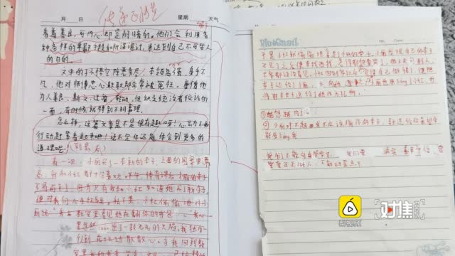

@新浪视频:
【#江苏课后坠亡小学生家属发声# ，#官方通报小学女生作文课后坠亡# 】缪可馨，江苏常州小学五年级的小姑娘，在本月4日选择从教学楼一跃而下结束自己的生命。 #对焦Focus# @一手Video
#对焦Focus# @一手Video
据孩子妈妈讲述，6月4日作文课，缪可馨在《三打白骨精》读后感中，认为白骨精很善于欺骗，十分可怕，发出感慨：“不要被表面的样子，虚情假意伪善的一面所蒙骗。在如今的社会里，有人表面看着善良，可内心确是阴暗的。他们会利用各种各样的卑鄙手段和阴谋诡计，来达到自己不可告人的目的。”这样一个观点，却被任课的袁老师批评：“太负能量。”并在作文纸上批：传递正能量。
下课后，可馨冲出教室，爬上栏杆，从四楼坠落身亡。据可馨家属讲，更令人想不到的是，缪可馨自杀后，班上其他家长还在家长群里发起投票为老师点赞，不少家长点赞老师。
事后，当地通报称未发现袁老师在课堂中存在辱骂和殴打行为。
 一手video的秒拍视频
一手video的秒拍视频
据孩子妈妈讲述，6月4日作文课，缪可馨在《三打白骨精》读后感中，认为白骨精很善于欺骗，十分可怕，发出感慨：“不要被表面的样子，虚情假意伪善的一面所蒙骗。在如今的社会里，有人表面看着善良，可内心确是阴暗的。他们会利用各种各样的卑鄙手段和阴谋诡计，来达到自己不可告人的目的。”这样一个观点，却被任课的袁老师批评：“太负能量。”并在作文纸上批：传递正能量。
下课后，可馨冲出教室，爬上栏杆，从四楼坠落身亡。据可馨家属讲，更令人想不到的是，缪可馨自杀后，班上其他家长还在家长群里发起投票为老师点赞，不少家长点赞老师。
事后，当地通报称未发现袁老师在课堂中存在辱骂和殴打行为。

559万次播放
04:51